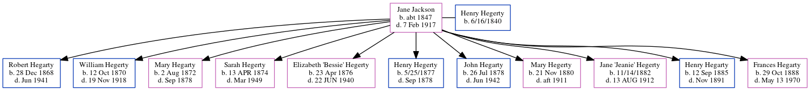

Jane Hegerty (née Jackson) c1847 - 1917
[ Home ] | [ Calendar ] | [ Surnames Index ] | [ Family History ]Jane Jackson was born in Baltinglass, Wicklow, Ireland c. 1847 and married Henry Hegerty (with whom she had 11 children: Robert Jackson, William Henry, Mary, Sarah Anne, Elizabeth "Bessie", Henry, John Joseph, Mary, Jane "Jeanie", Henry Thomas and Frances Caroline) in Baltinglass on Mar 10, 1868.
She died on Feb 7, 1917 in Belan, Moone, Kildare, Ireland.
Children
- Robert Jackson was born on Dec 28, 1868
- William Henry was born on Oct 12, 1870
- Mary was born on Aug 2, 1872
- Sarah Anne was born on Apr 13, 1874
- Elizabeth "Bessie" was born on Apr 23, 1876
- Henry was born on 5/25/1877
- John Joseph was born on Jul 26, 1878
- Mary was born on Nov 21, 1880
- Jane "Jeanie" was born on 11/14/1882
- Henry Thomas was born on Sep 12, 1885
- Frances Caroline was born on Oct 29, 1888
Family Tree
Generated by ged2site. Last updated on Jun 15, 2024